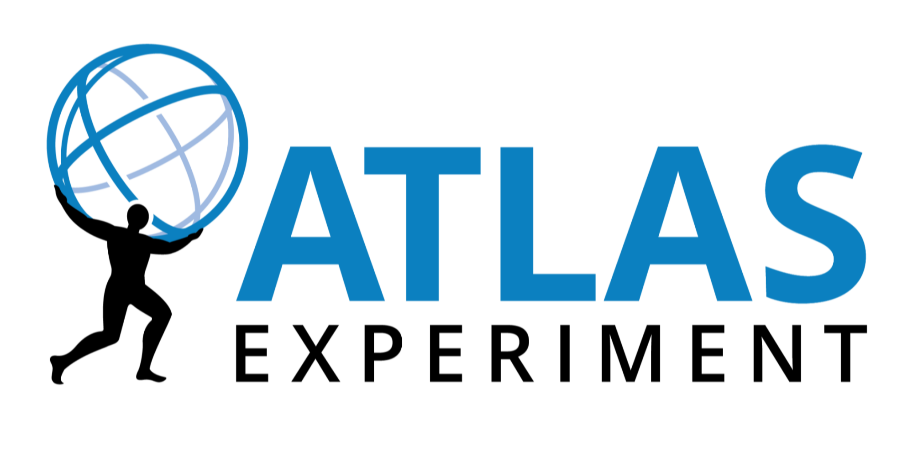
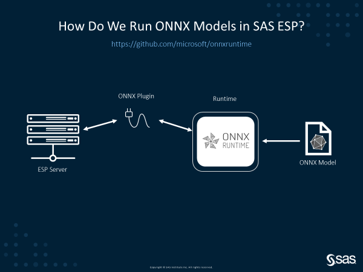
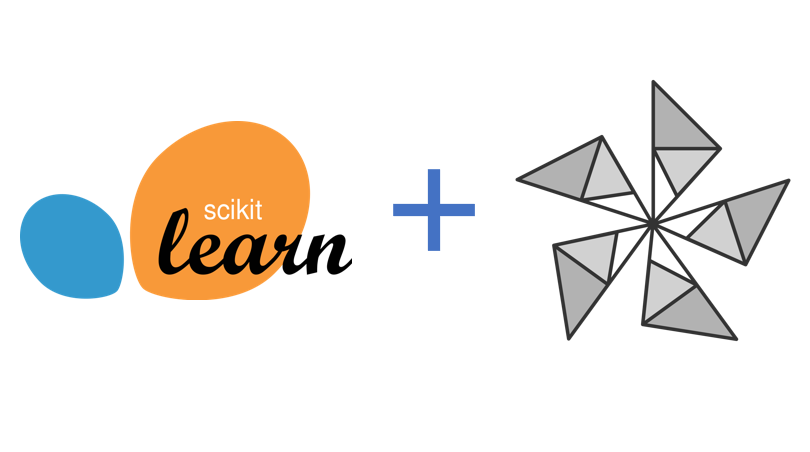

Optimize and Accelerate Machine Learning Inferencing and Training
Speed up machine learning process
Built-in optimizations that deliver up to 17X faster inferencing and up to 1.4X faster training
Plug into your existing technology stack
Support for a variety of frameworks, operating systems and hardware platforms
Build using proven technology
Used in Office 365, Visual Studio and Bing, delivering over 500 billion inferences every day
Please help us improve ONNX Runtime by participating in our customer survey.
Get Started Easily
- Optimize Inferencing
- Optimize Training (Preview)
OS
OS list contains five items
Windows
Linux
Mac
Android (Preview)
iOS (Preview)
API
API list contains seven items
Python (3.6-3.9)
C++
C#
C
Java
Node.js
WinRT
Architecture
Architecture list contains four items
X64
X86
ARM64
ARM32
Hardware Acceleration
Hardware Acceleration list contains fourteen items
Default CPU
CUDA
DirectML
oneDNN
OpenVINO
TensorRT
ACL (Preview)
ArmNN (Preview)
CoreML (Preview)
MIGraphX (Preview)
NNAPI (Preview)
NUPHAR (Preview)
Rockchip NPU (Preview)
Vitis AI (Preview)
Installation Instructions
Please select a combination of resources
“We use ONNX Runtime to easily deploy thousands of open-source state-of-the-art models in the Hugging Face model hub and accelerate private models for customers of the Accelerated Inference API on CPU and GPU.”
– Morgan Funtowicz, Machine Learning Engineer, Hugging Face
“The unique combination of ONNX Runtime and SAS Event Stream Processing changes the game for developers and systems integrators by supporting flexible pipelines and enabling them to target multiple hardware platforms for the same AI models without bundling and packaging changes. This is crucial considering the additional build and test effort saved on an ongoing basis.”
– Saurabh Mishra, Senior Manager, Product Management, Internet of Things, SAS
“The ONNX Runtime API for Java enables Java developers and Oracle customers to seamlessly consume and execute ONNX machine-learning models, while taking advantage of the expressive power, high performance, and scalability of Java.”
– Stephen Green, Director of Machine Learning Research Group, Oracle
“ONNX Runtime has vastly increased Vespa.ai’s capacity for evaluating large models, both in performance and model types we support.”
– Lester Solbakken, Principal Engineer, Vespa.ai, Verizon Media
“We use ONNX Runtime to accelerate model training for a 300M+ parameters model that powers code autocompletion in Visual Studio IntelliCode.”
– Neel Sundaresan, Director SW Engineering, Data & AI, Developer Division, Microsoft
“Using a common model and code base, the ONNX Runtime allows Peakspeed to easily flip between platforms to help our customers choose the most cost-effective solution based on their infrastructure and requirements.”
– Oscar Kramer, Chief Geospatial Scientist, Peakspeed
“We needed a runtime engine to handle the transition from data science land to a high-performance production runtime system. ONNX Runtime (ORT) simply ‘just worked’. Having no previous experience with ORT, I was able to easily convert my models, and had prototypes running inference in multiple languages within just a few hours. ORT will be my go-to runtime engine for the foreseeable future.”
– Bill McCrary, Application Architect, Samtec

“At CERN in the ATLAS experiment, we have integrated the C++ API of ONNX Runtime into our software framework: Athena. We are currently performing inferences using ONNX models especially in the reconstruction of electrons and muons. We are benefiting from its C++ compatibility, platform*-to-ONNX converters (* Keras, TensorFlow, PyTorch, etc) and its thread safety.”
– ATLAS Experiment team, CERN (European Organization for Nuclear Research)
“With customers around the globe, we’re seeing increased interest in deploying more effective models to power pricing solutions via ONNX Runtime. ONNX Runtime’s performance has given us the confidence to use this solution with our customers with more extreme transaction volume requirements.”
– Jason Coverston, Product Director, Navitaire
News & Announcements
SAS and Microsoft collaborate to democratize the use of Deep Learning Models
Artificial Intelligence (AI) developers enjoy the flexibility of choosing a model training framework of their choice. This includes both open-source frameworks as well as vendor-specific ones. While this is great for innovation, it does introduce the challenge of operationalization across different hardware platforms...Read more

Optimizing BERT model for Intel CPU Cores using ONNX runtime default execution provider
The performance improvements provided by ONNX Runtime powered by Intel® Deep Learning Boost: Vector Neural Network Instructions (Intel® DL Boost: VNNI) greatly improves performance of machine learning model execution for developers...Read more

Accelerate and simplify Scikit-learn model inference with ONNX Runtime
Scikit-learn is one of the most useful libraries for general machine learning in Python. To minimize the cost of deployment and avoid discrepancies, deploying scikit-learn models to production usually leverages Docker containers and pickle, the object serialization module of the Python standard library...Read more

ONNX Runtime scenario highlight: Vespa.ai integration
Since its open source debut two years ago, ONNX Runtime has seen strong growth with performance improvements, expanded platform and device compatibility, hardware accelerator support, an extension to training acceleration, and more...Read more